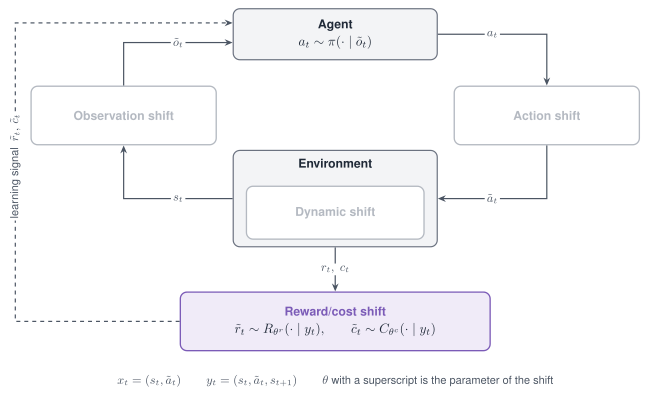
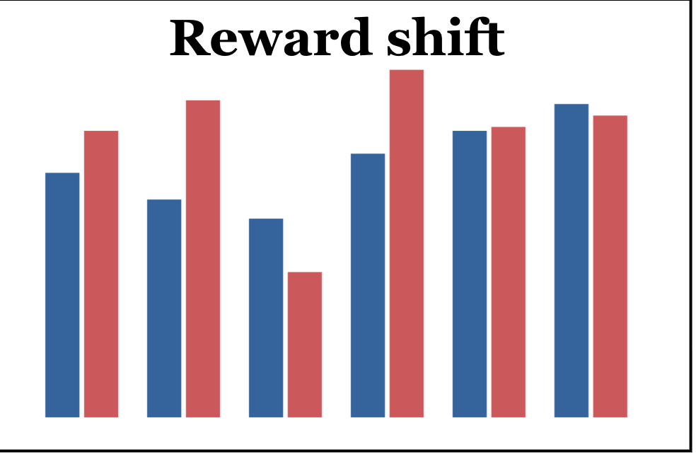

Reward/cost shift¶
A Reward/cost shift changes the learning signal. It perturbs the scalar reward returned by
step, or a cost field of the info dictionary, and leaves the observation, the action and
the dynamics untouched.

The Reward/cost shift acts on the learning signal: the reward and the cost that reach the learner are perturbed.

A Reward/cost shift changes the reward at every step.
Properties¶
| Aspect | Reward/cost shift |
|---|---|
| Perturbs | The reward, or a cost field in info |
| Targets in code | reward and cost |
| Modes | Stochastic, Parametric, Non-stationary, Composition |
| Applied | At every step |
| Acts on a frozen policy | No; it is applied during training |
| Backends | Any; the shift needs nothing from the simulator |
Supported modes¶
| Mode | Mode name in code | What it does |
|---|---|---|
| Stochastic | gauss |
Adds one Gaussian draw per step |
| Stochastic | uniform |
Adds one uniform draw per step |
| Parametric | shift |
Adds a constant at every step |
| Non-stationary | schedule on any of the three mode names |
Varies the noise level or the offset within the episode |
| Composition | Several shifts in one list | Corrupts the reward and the cost, or stacks two corruptions |
The Adversarial mode is not defined for this shift. cost has no delay; the mode name
delay postpones the reward and belongs to the Latency shift.
Parameters¶
| Mode name | Parameter | Type | Default | Meaning |
|---|---|---|---|---|
gauss |
mu |
float | 0.0 |
Mean of the noise |
sigma |
float | 0.05 |
Standard deviation of the noise | |
uniform |
low, high |
float | minus range, range |
Bounds of the noise |
range |
float | 0.1 |
Shorthand for a symmetric interval | |
shift |
shift |
float | value, else 0.0 |
The constant |
all, on the target cost |
info_key |
str | "cost" |
The field of info that is perturbed; a missing field counts as 0 |
Declare the shift¶
from robustrllib import make_robust, ShiftSpec
STOCHASTIC = {
"gauss": ShiftSpec("reward", "gauss", {"sigma": 0.5}),
"uniform": ShiftSpec("reward", "uniform", {"low": -0.5, "high": 0.5}),
}
PARAMETRIC = ShiftSpec("reward", "shift", {"shift": -0.5})
COST = ShiftSpec("cost", "gauss", {"sigma": 0.1, "info_key": "cost"})
Non-stationary, with reward noise that grows within the episode:
NON_STATIONARY = ShiftSpec(
"reward", "gauss", {"sigma": 0.5},
schedule={"type": "linear", "start": 0.0, "end": 1.0, "t0": 0, "t1": 500},
)
Composition of a reward corruption and a cost corruption:
COMPOSITION = [
ShiftSpec("reward", "gauss", {"sigma": 0.5}),
ShiftSpec("cost", "shift", {"shift": 0.1}),
]
A shift on the target reward changes the reward; a shift on the target cost changes the
field in info and leaves the reward alone.
import numpy as np
def first_step(shifts):
env = make_robust("Hopper-v5", shifts=shifts, seed=0)
env.reset(seed=0)
_, reward, _, _, info = env.step(np.zeros(3))
env.close()
return round(float(reward), 3), info.get("cost")
print(first_step([]))
print(first_step([PARAMETRIC]))
print(first_step([ShiftSpec("cost", "shift", {"shift": 0.1})]))
(0.999, None)
(0.499, None)
(0.999, 0.1)
The shift is carried into training by the launcher: robustrllib/configs/train_shifts.yaml
defines the arms the benchmark uses, and baselines/train.py --train-shift reward_gauss selects
one.
reward_gauss:
- target: reward
mode: gauss
params: {sigma: 0.5}
An online method receives the shift in the shift list of its training environment. An offline method learns from a dataset, so the same corruption is applied to the rewards of the dataset, seeded from the run's seed.
Note
A frozen policy does not read the reward. Applied at evaluation time, a Reward/cost shift changes the measured return and leaves the trajectory as it was.
Rules¶
- A Reward/cost shift is studied by training under it and evaluating on the nominal task.
- The target
rewardchanges the reward; the targetcostchanges a field ofinfo. info_keynames the cost field when the task does not call itcost.- The mode names are
gauss,uniformandshift; every other mode name raisesValueErrorno later than the firststep. - A delayed reward is declared as a Latency shift with the mode name
delay. - The noise level is given in the units of the reward, not as a fraction of it.